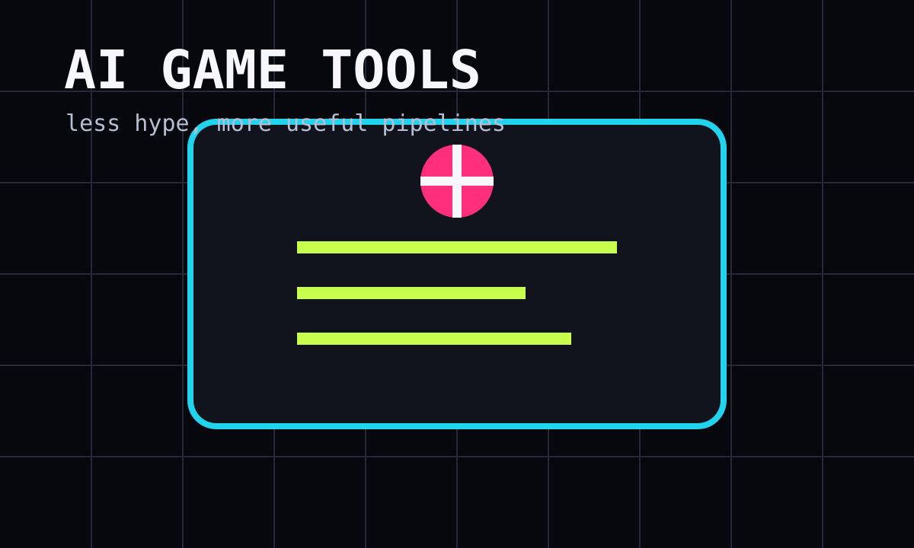

guide · AI
AI in Games Is Not Just Hype Anymore
AI is becoming part of content pipelines, support, testing and LiveOps instead of being only a marketing headline.

TL;DR
AI is moving behind the scenes: testing, support, search, moderation and content tools.
Why gamers care
Players care less about buzzwords and more about games that update faster and break less.
Move
Expect better discovery and recommendations, not magic games built from nothing.
The short version
AI in gaming is becoming less “look at this trailer” and more “this tool helps the team ship faster.” That is a better use case.
Where it actually helps
Testing bugs, organizing huge catalogs, moderating communities, support bots and better search are boring compared to hype videos, but much more useful.
For Arcade World
The right AI angle is smarter game discovery: better tags, better related games, better summaries and less dead content.
Sources and further reading
Keep exploring
Open the Game Room or visit the latest stories.